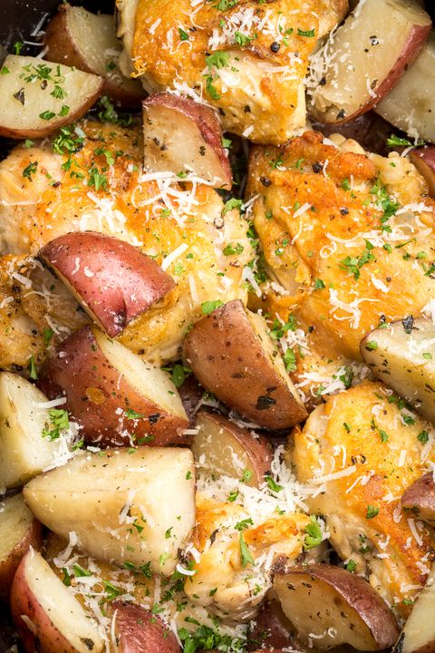

Crockpot Garlic Parm Chicken and Potatoes

It's crockpot garlic parmesan chicken! I can't imagine a more beautiful thing! When I had it with potatoes, everything changed!
Back to homepage
Ingredients
- 3 (separate)tablespoons extra-virgin olive oil
- 2 lbs bone-in,skin-on chicken thighs
- Kosher salt
- Fresh ground black pepper
- Fresh chopped parsley
- 1 lb baby red potatoes, quartered
- 2 tablespoons butter, softed
- 5 cloves garlic, chopped
- 2 tbsp. fresh thyme
- 2 tbsp. grated parm(but really as much as you want because it's grated parm so just measure with your heart
Preparation
- Heat 1 tbsp oil in a large skillet over medium-high heat
- Add chicken, season with salt and pepper, and sear until golden(around 3 minutes per side)
- In a crockpot, toss the potatoes with 2 tbsp oil, and the rest of the ingredients. Season generously with salt and pepper.
- Add chicken and cook on high for 4 hours or low for 8 hours,until potatoes are tender and chicken is fully cooked.
- Garnish with as much parmesan as you want, and serve!
Personal attempts:
1.  Back to homepage
Back to homepage